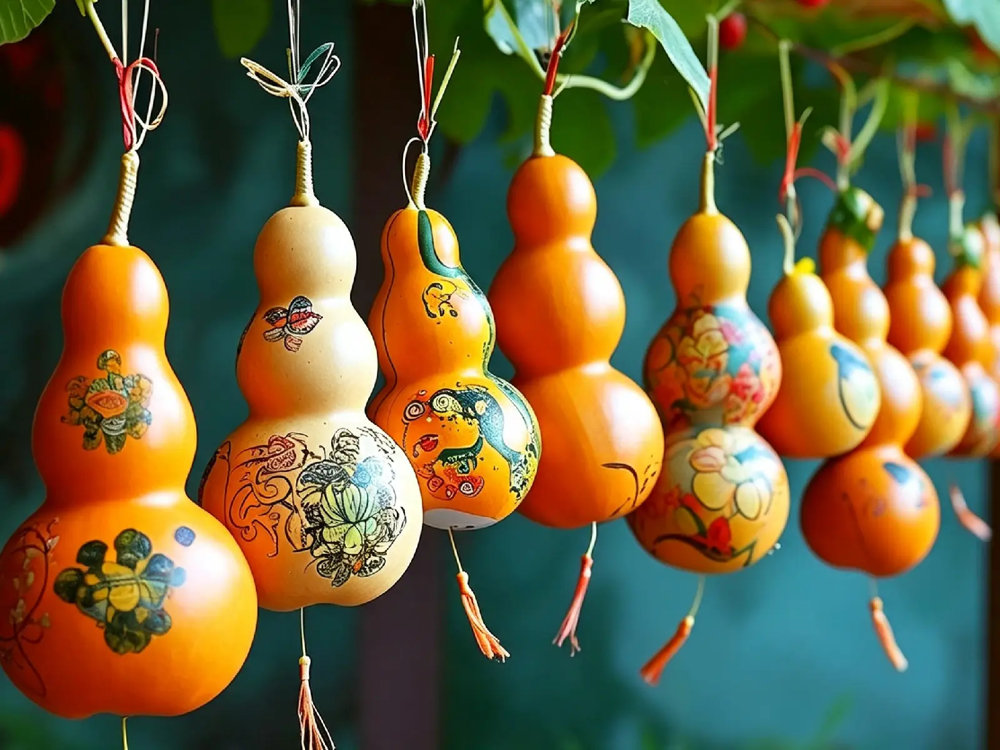
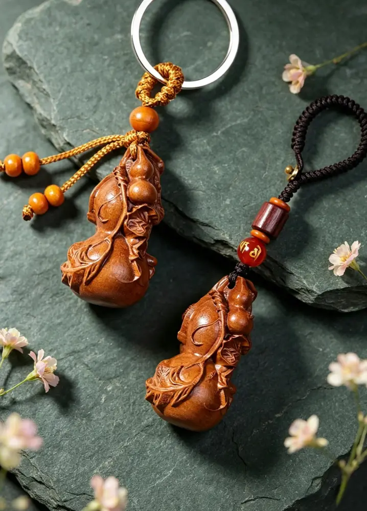
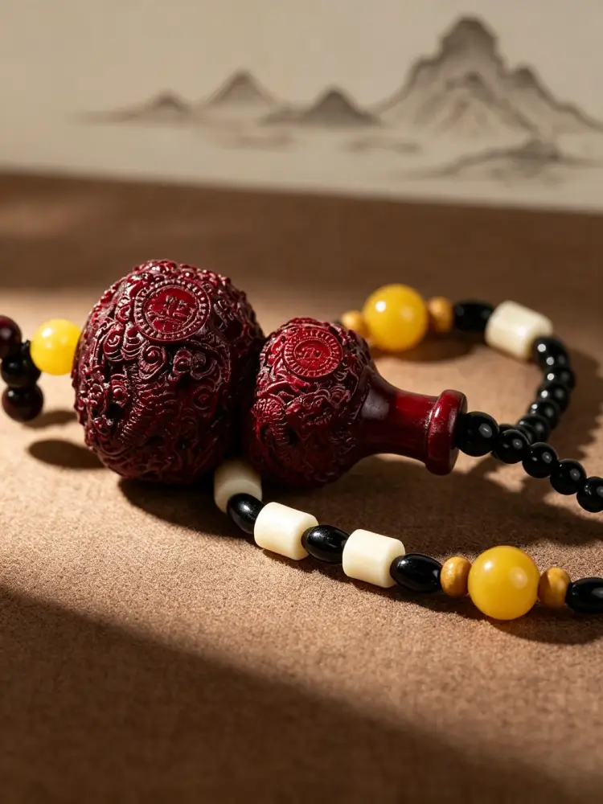
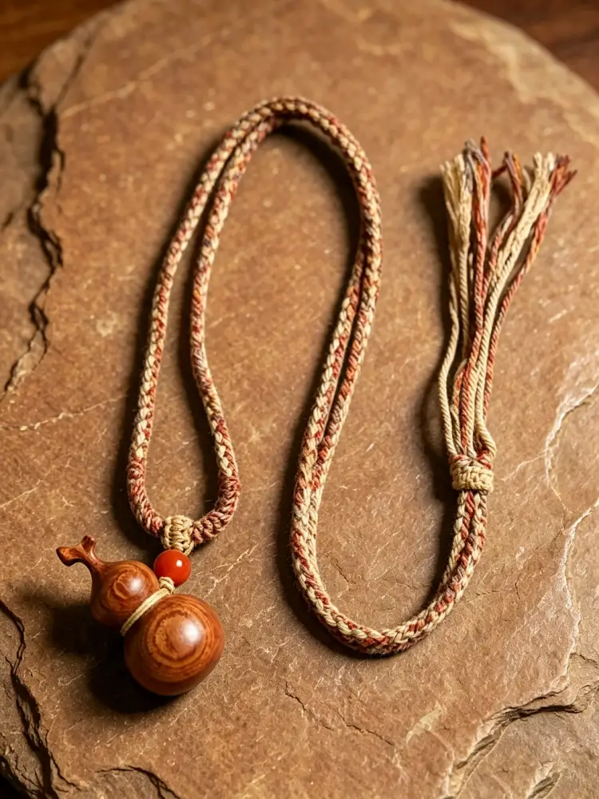

In Chinese culture, few objects carry as many layers of meaning as the humble gourd. The word for gourd in Chinese — hú lú — sounds nearly identical to "fortune and prosperity" (fú lù). This simple phonetic connection has woven the gourd into the fabric of Chinese folk culture for over two thousand years, making it one of the most beloved symbols of good fortune.
But the gourd is far more than a lucky charm. Its round, full shape represents completeness and harmony — values deeply cherished in Chinese philosophy. Its narrow mouth and round belly are believed to gather and hold good fortune, keeping blessings from escaping. Its long, winding vines and abundant seeds carry the beautiful promise of continuity and prosperity for generations to come.
In ancient times, people often hung dried gourds above their doorways to ward off negativity and invite peace into their homes. In myths and legends, immortals carried gourds as vessels for magical elixirs, using them to heal, protect, and bestow blessings upon the worthy.
This keychain is carved from peach wood, which has long been revered in Chinese tradition as the "essence of the five woods." For thousands of years, it has been regarded as a material that dispels misfortune and protects its wearer from harm. In ancient times, people would carve peach wood into talismans and hang them above doorways to keep their homes safe. Peach wood is believed to carry a gentle yet steady protective energy — a belief that endures to this day.

This peach wood gourd keychain brings all of these layered meanings together in a compact form. Small and delicate, it can be carried with you wherever you go — attached to your keys, clipped to your bag, or given as a thoughtful gift to someone you care about.
When you carry it, you carry not just an elegant little object, but centuries of accumulated blessings:
Good fortune, accompanying every departure
Peace, guarding every journey
Auspiciousness, lingering in every everyday moment
Abundance, filling every passing day
Continuity, linking the past to the future
This small gourd holds all of these — a gentle, wordless blessing from an ancient culture that still believes in the power of symbols, in the warmth of meaning, and in the quiet sincerity of life's small gestures.

This small gourd holds all of these — a gentle, wordless blessing from an ancient culture that still believes in the power of symbols, in the warmth of meaning, and in the quiet sincerity of life's small gestures.

Peach Wood Carved Gourd Keychain

Lightning-struck Peach Wood Striped Gourd Pendan

Red Bamboo & Wood Carved Dragon Gourd Bracelet

Natural Grain Peach Wood Gourd Braided Necklace

Dark Reddish Brown Sandalwood Gourd Keychain

Peach Wood Carved "Lucky" Gourd Keychain